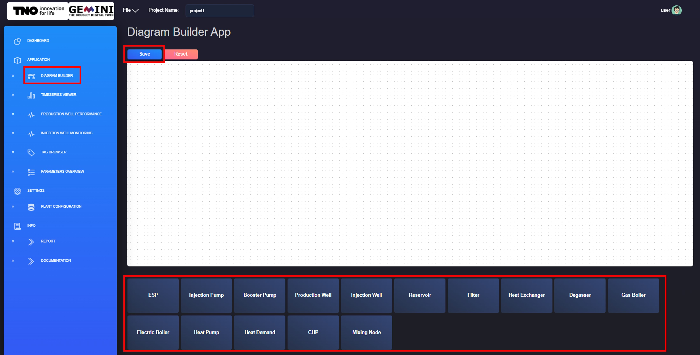
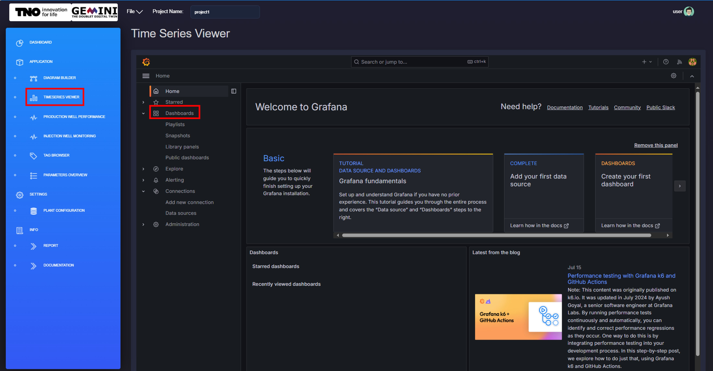
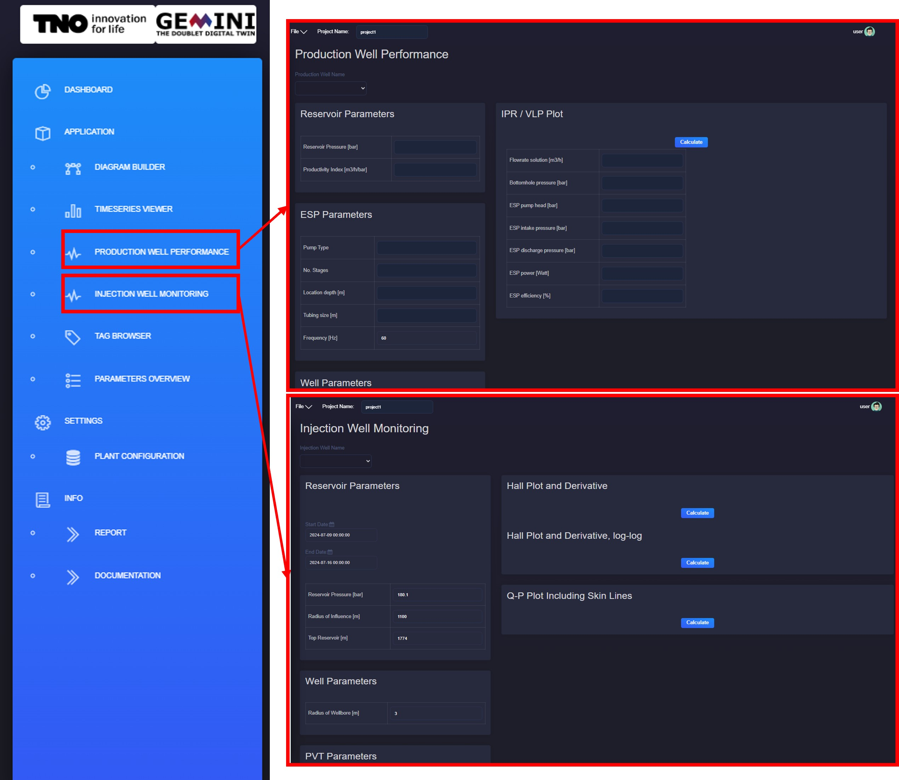
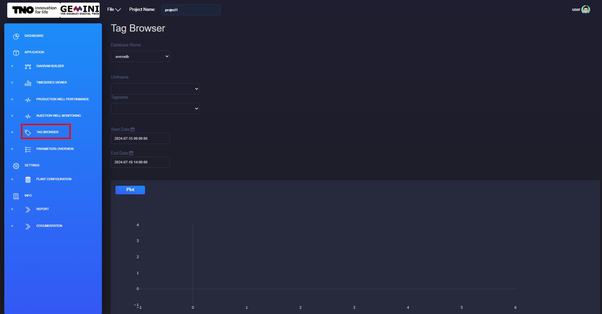
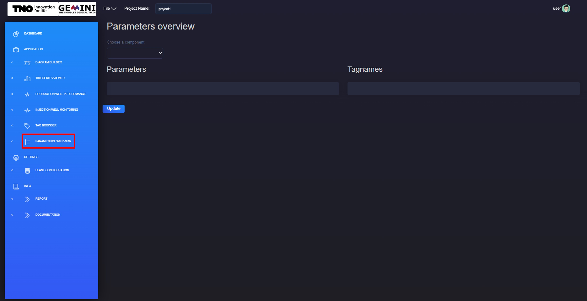
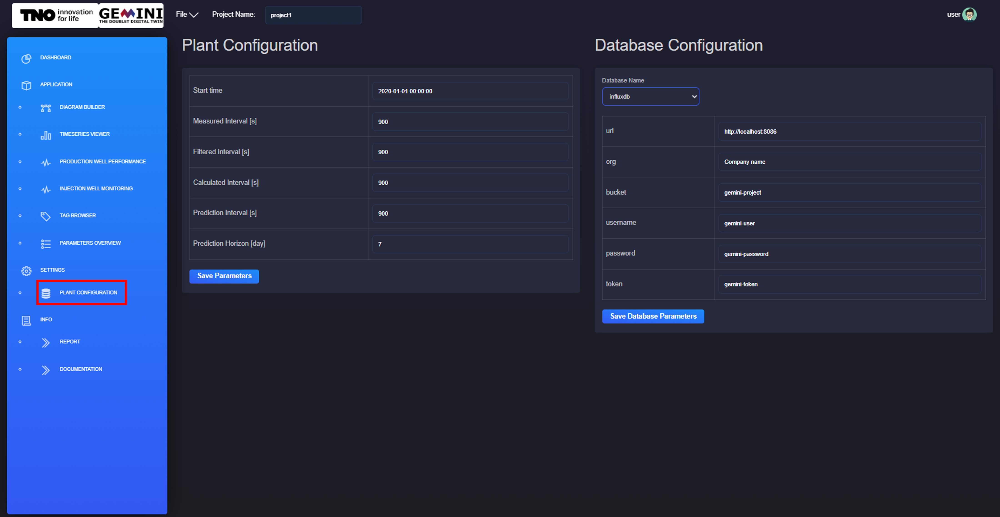
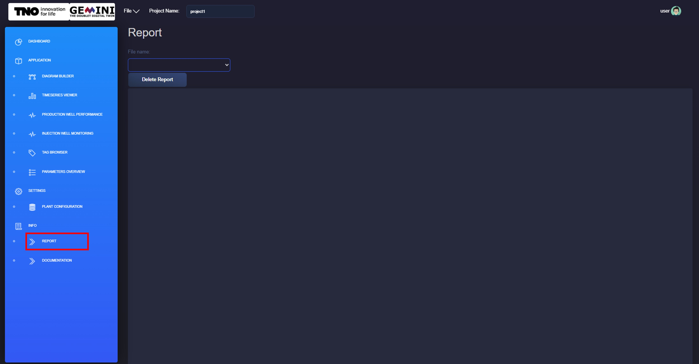
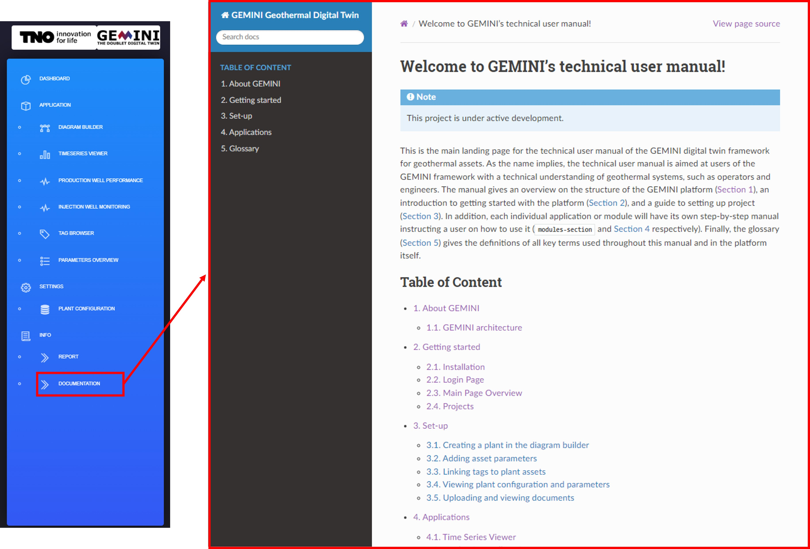

2.4. Main Page Overview
After opening a project, the main page is the operational entry point for applications, settings, and project information.

2.4.1. Dashboard
The dashboard groups features into three sections: Applications, Settings, and Info.
{kind=link}
2.4.2. Applications
- Diagram Builder:
Build the plant diagram and configure component parameters.

- Timeseries Viewer:
Opens Grafana for real-time monitoring of measured and calculated signals. See Time Series Viewer.

- Production Well Performance and Injection Well Monitoring:
Provides advanced well monitoring tools (for example IPR/VLP, Hall plot, and skin analysis). See Applications.

- Tag Browser:
Plot selected tags for a component over a chosen time window.

- Parameters Overview:
View and edit component parameters and tag mappings.

{kind=link}
{kind=link}
{kind=link}
{kind=link}
{kind=link}
2.4.3. Settings
- Plant Configuration:
Configure plant timing settings and database connection settings.

{kind=link}
2.4.4. Info
- Report:
Upload and view project reports (for example P&IDs).

- Documentation:
Open this user manual.

{kind=link}
{kind=link}